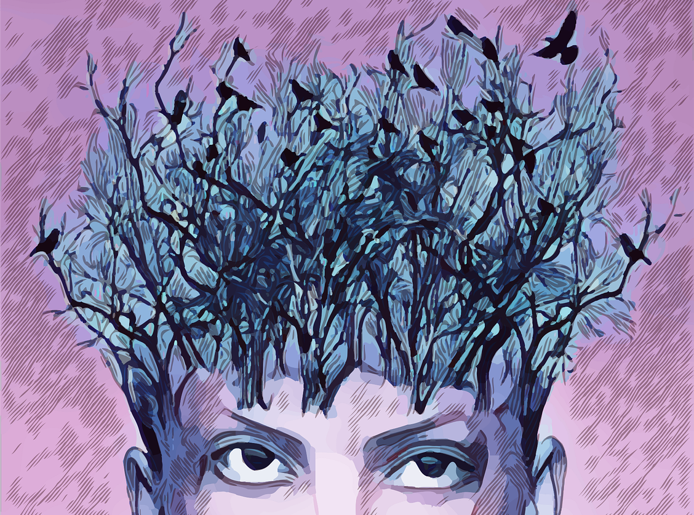
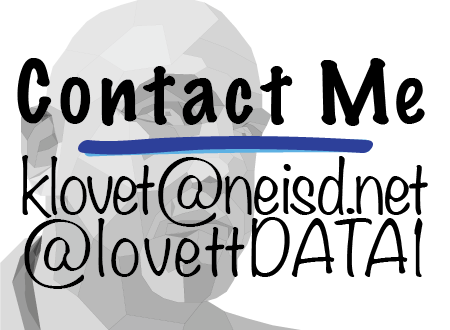

This debugging exercise is really more of an expression of gratitude for my students. I never really get a chance to tell my students how much I appreciate them and especially the work they do for me in my classes. While my projects are typically pretty easy, they can get challenging at times. Furthermore, we are in a pandemic and everything seems to be more difficult even the easy things.
Let me start off by saying thank you to those of you who feel comfortable sharing your video feed with me. I know for some of you this is uncomfortable and I get it. I also know there are those that are hiding the fact that they are playing video games; but honestly with you guys, that’s a very small number. To those of you who do continually keep your video feed on, I just want you to know that you make my day so much better. To just see you is such an encouragement to me. Moreover, when I get a smile from my corny jokes and see your reactions it really makes my day. Thank you for being vulnerable with me in this new way of learning/teaching.
Next I want to thank you for always showing up on time and sticking with me until I dismiss you. I know this is the expectation. BUT, You guys do it...EVERY...DAY!! In fact, you guys are usually waiting on me to open the zoom. That truly is a blessing for me. Thank you!
Next, I want to talk about your coding. You guys have come so far!! In fact, there is only one more thing I wanted to talk to you about as far as HTML goes before we move on to CSS. That last thing is tables. I think I will wait until we get into CSS before we do that one. The reason is we really need to figure out how to debug our code. This is a skill every programmer uses on a daily basis. Before we get into CSS, I would be failing you if I didn’t give you a few debugging exercises to help you find your rhythm.
Now that I think about it, there is one other thing I wanted to show you. This one is SOOOOO cool. It is called an . Basically, an Iframe lets you put a web page within a web page. Have you seen web pages with youtube videos embedded into them? Iframes are how they do it.
I’m not going to make your life very difficult debugging that Iframe. But what I want you to do is add an Iframe under it to a YouTube video you like. If it’s short I might even have time to watch it.
shut up
— high arc s (@HighArcs) November 30, 2020
I Get Distracted.
Look at me! My thank you has turned into coding. While I did intend for that to happen, I also wanted this to be a fun adventure.
In conclusion, I just want to say thank you. You really do mean the world to me and I am very excited about the cool things we are going to do next semester. Let’s look at the reasons I’m so thankful for you:
Thank you,
Mr. Lovett
Please email me here.
The image below will send you to my twitter page.
